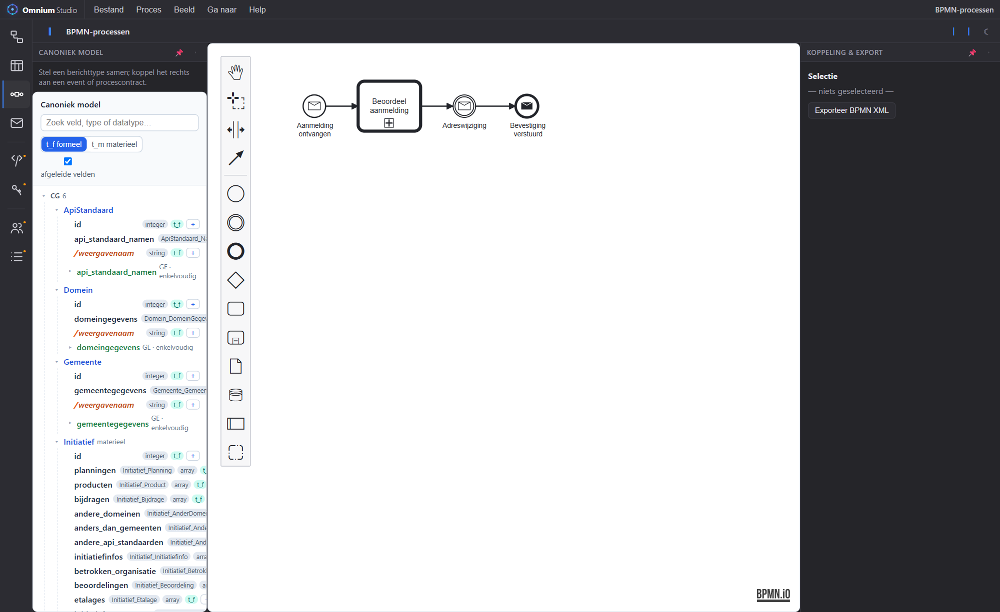

Modelleer bedrijfsprocessen in BPMN 2.0 (bpmn.io) bovenop hetzelfde canonieke model. Koppel events en taken aan berichttypen en gegevens, zodat een proces geen losse tekening is maar onderdeel van één samenhangend geheel.

De BPMN-activiteit hergebruikt de bpmn.io-modeler en plaatst er de gedeelde Model Picker naast, zodat procesinhoud direct aan het canonieke model gekoppeld kan worden.
Volledige BPMN 2.0-paletten: events, taken, gateways, sub-processen — met pan/zoom en eigenschappen.
Bind message-events en taken aan velden, gegevenselementen en berichttypen via de Model Picker (formeel/materieel tijdas).
Message-events verwijzen naar de berichtdefinities, zodat proces en payload synchroon blijven.
Exporteer het proces als standaard BPMN XML voor uitvoering of uitwisseling met andere tools.
Een proces raakt vrijwel altijd de andere domeinen. In Omnium Studio lopen die koppelingen via het canonieke model:
Teken een proces en koppel het aan je gegevens, regels en berichten.
Open Omnium Studio →